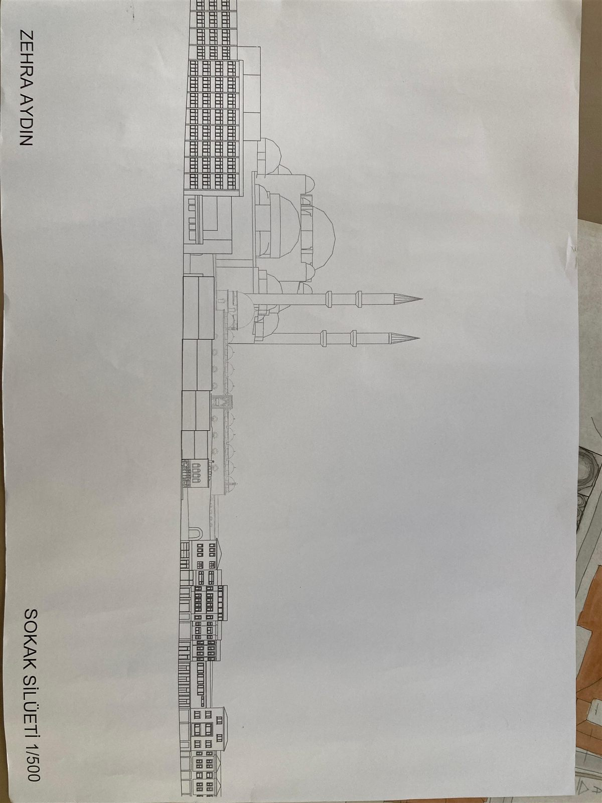
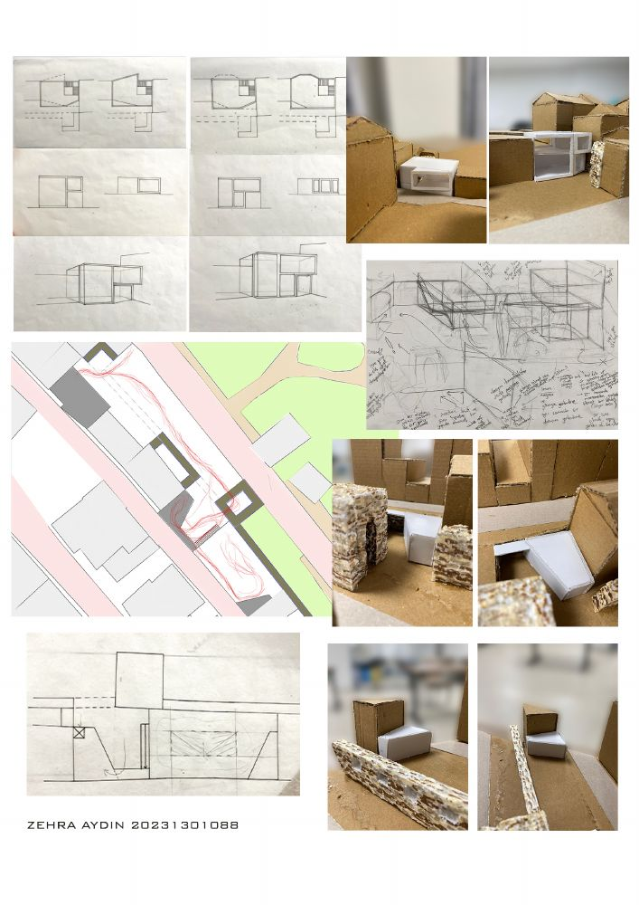
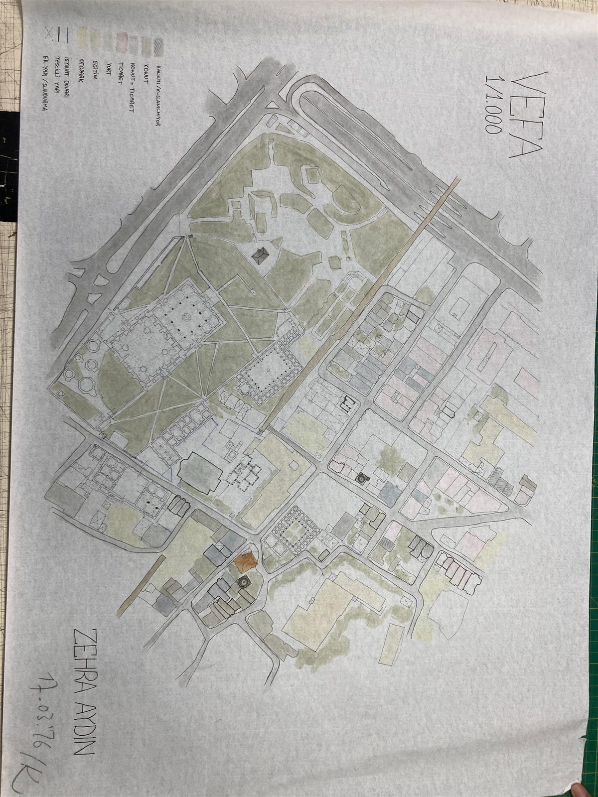
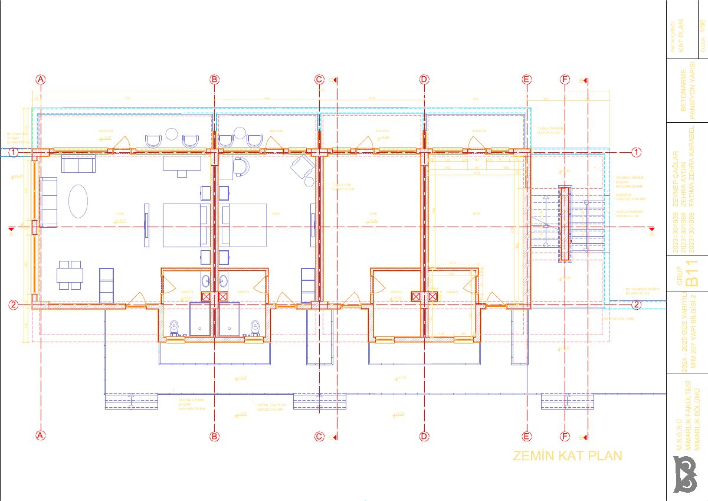
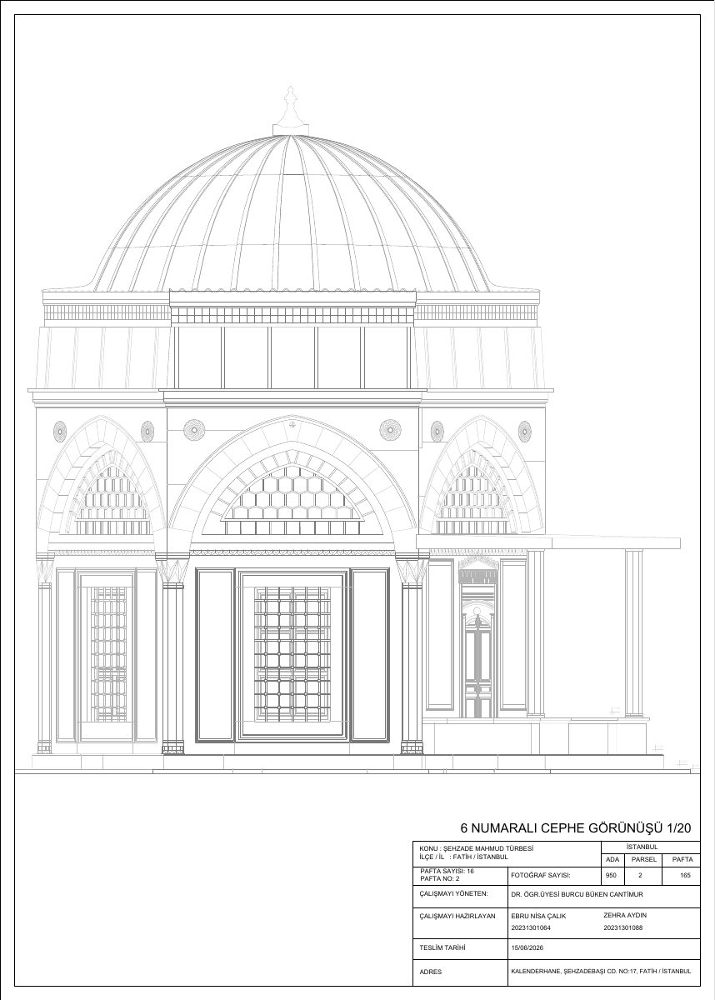
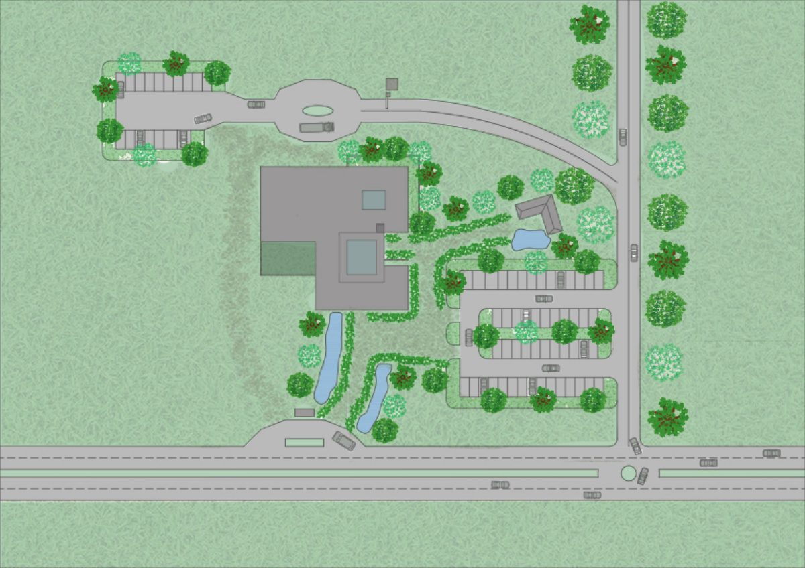
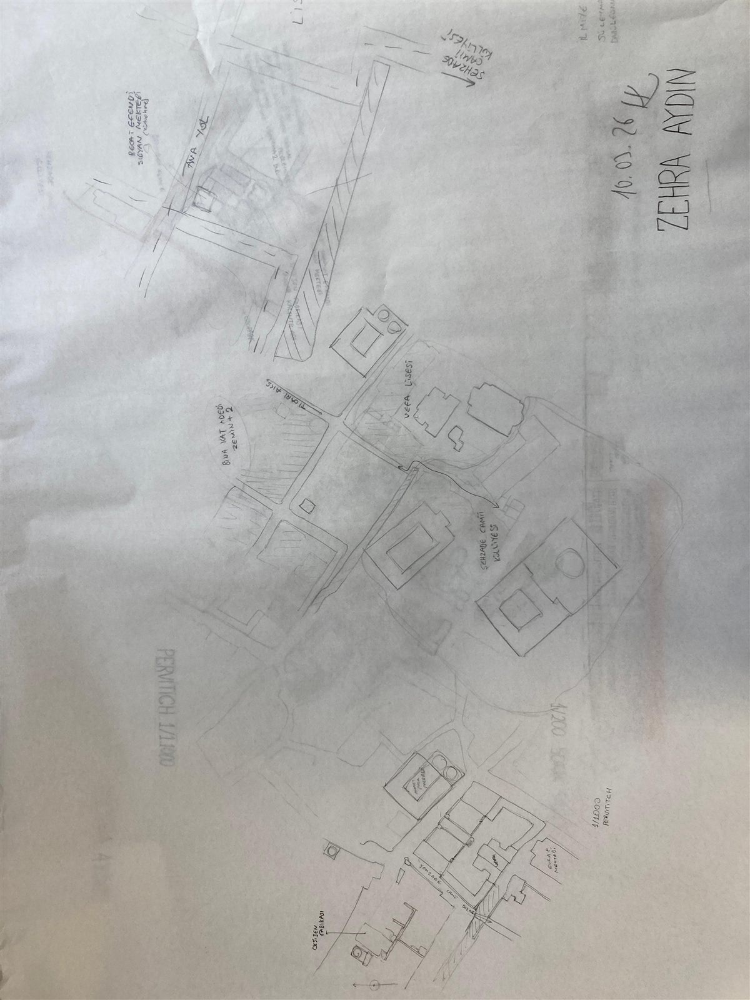
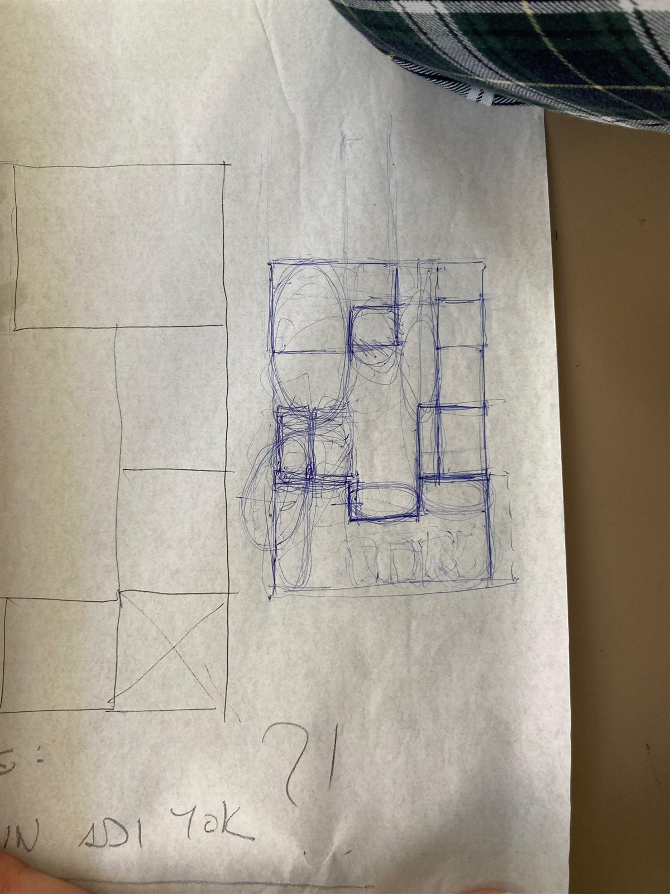
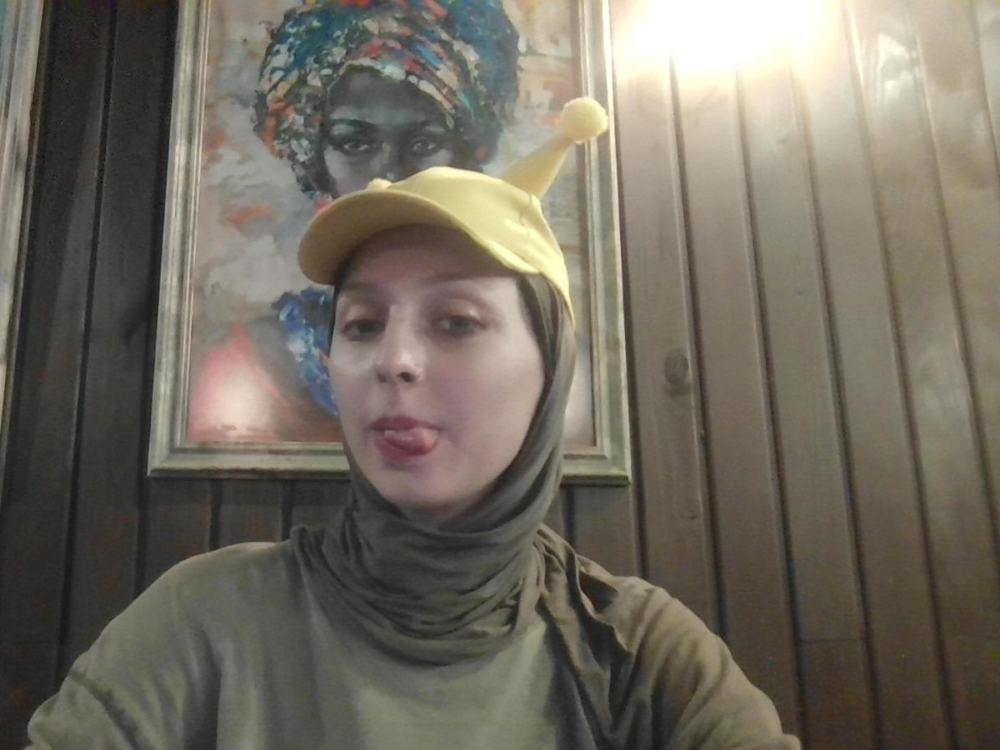

ARCHITECTURE · DESIGN · RESEARCH
BETWEEN
LINES®
Designing through
spaces, stories & systems.

FIELD
NOTES
№ 01
A PLACE IS NEVER JUST A PLACE ↗NOTES
№ 01
SPACE IS A VERB✳DRAWN TO THE IN-BETWEEN✳SPACE IS A VERB✳DRAWN TO THE IN-BETWEEN✳
01 / MY WORKSSelected
Selected
works.
Five projects, each with its own place, scale
and way of seeing the world.

01 / BALAT, ISTANBUL↗01Haliç Walls
PUBLIC / HERITAGE
Haliç Walls
Visitor Center Complex
Balat, Istanbul · Visitor center, café & shop

02 / VEFA↗02Vefa Library
LEARNING / CITY
Vefa Library
Complex
Architectural studio project · 2025—26

03 / STRUCTURE + SPACE↗03BUILDING STUDY
Yapı2 Project
Plans, sections & building systems · 2025—26

04 / FATIH, ISTANBUL↗04Şehzade Mahmud Tomb
DOCUMENTATION
Şehzade Mahmud Tomb
Survey (Rölöve) Project
Measured architectural survey · 2026

05 / LANDSCAPE + RITUAL↗05Crematorium
MTSY / STUDIO
Crematorium
Project
Spatial and landscape study
FIVE PROJECTS / ONE GROWING ARCHIVESEE THE PROCESS ↘
02 / FIELD NOTESUNFINISHED IS A PLACE, TOO.
Thinking
in progress↗
Not every line knows
where it’s going yet.


KEEP
LOOKING
↙A NOTE TO SELF, ALWAYS
LOOKING
↙A NOTE TO SELF, ALWAYS
Sketches, fragments, detours.
A living record of how an idea gets built.
03 / THE PERSON BEHIND THE PENCIL✳
Hello,
I’m Zehra.
I study architecture at Mimar Sinan Fine Arts University in Istanbul.
I’m interested in art, spatial experience and visual research.
THINGS I COME BACK TOArchitectureArt & spatial experienceVisual researchMaterial experiments

FIG. 04— ISTANBUL
2026Z. AYDIN / STUDIO NOTES
04 / CONTACTGOOD THINGS START WITH A NOTE
For questions, collaborations and a good conversation.
LET’S MAKESOMETHING
INTERESTING↗